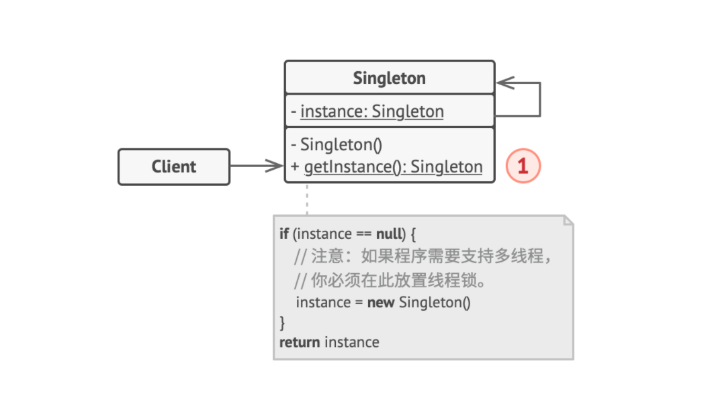

# 1. 原型模式

- 原型 （Prototype） 接口将对克隆方法进行声明。 在绝大多数情况下， 其中只会有一个名为
clone克隆的方法。 - 具体原型 （Concrete Prototype） 类将实现克隆方法。 除了将原始对象的数据复制到克隆体中之外， 该方法有时还需处理克隆过程中的极端情况， 例如克隆关联对象和梳理递归依赖等等。
- 客户端 （Client） 可以复制实现了原型接口的任何对象。
含义：原型模式亦是克隆模式。
注意的点：仅仅拷贝 int char long; 而不拷贝 String， 内部数组，引用对象。
前情提要：
1. 原型模式通过原型注册表来查找即将克隆的原型
2. 克隆对象需使用 super（target）来调用父类构造函数，实现对父类函数中私有变量的复制。
3. 常规构造方法和原型构造方法的区别：
疑问：为什么要有一个 public shape（）{} 之后还需要在进行 public shape (shape target){}
我已经知道前者代表常规构造函数，后者代表原型构造函数，既然是原型模式仅仅需要原型构造方法不就够了吗？为什么还要再加一个常规构造函数；
解答：
- 1. 首先声明构造函数的目的是为了初始化成员变量，因此一开始生成一个类时，java 都会首先生成一个常规构造函数
- 2. 常规构造函数的存在必要性是因为：常规构造函数存在的目的是对当前对象的进行变量初始化。而原型构造函数存在的必要性是因为：对克隆对象的构造方法进行调用，通过调用克隆对象的方法来复制克隆对象的私有变量，以便于进行克隆修改
原文链接：https://refactoringguru.cn/design-patterns/prototype
# 使用场景:
- 需要复制一些对象
优点:
- 更方便的生成复杂对象
- 用继承以外的方式处理复杂对象
# 2. 单例模式

单例模式
含义：保证一个类只有一个实例，只有一个访问该类的全局节点
前情提要：
1. 保证一个类只有一个实例，即：
- i. 将构造函数私有化，确保每次 new 的时候访问到的不再是新建的一个全新对象。至始至终都是同一个人。
- ii. 为该类提供一个全局对象，确保该类不会被重写
2. 单例模式需注意的点：
- i. 避免多个线程多次创建单例对象
3. 单例模式的特点：
- i. 返回的都是相同的静态方法